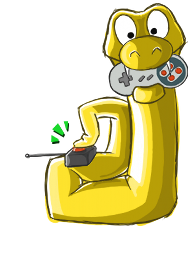

Competições para você participar(){
Games
Microsoft - Imagine Cup
A Imagine Cup, é um evento promovido pela Microsoft que envolve competições em várias áreas, e entre elas, desenvolvimento de jogos.
- Tema: "Imagine um mundo onde a tecnologia ajudaria a resolver os problemas mais duros"
- Tecnologias de desenvolvimento: Microsoft XNA e Microsoft Silverlight
- Como Participar: Registre seu time de 4 pessoas no site do evento.
- Mais informações: www.imaginecup.com/competitions/game-design
Mozilla - GAME_ON
- Tema: Não há um tema estabelecido para os games participantes, a idéia aqui é apenas fazer um jogo que rode no Firefox 4 e em outros navegadores modernos sem a necessidade da instalação de plugins.
- Tecnologias de desenvolvimento: Os jogos devem ser construidos usando tecnologias da open Web. O que inclui, mas não se limita a HTML, CSS, JavaScript, PHP, Python, Ruby ou Java.
- Como Participar: Registre-se no site do evento.
- Mais informações: gaming.mozillalabs.com/
SENAC SP - eGames10
- Tema: Não há um tema estabelecido para os games participantes, o intuito é de se testar a criatividade dos competidores.
- Tecnologias de desenvolvimento: Qualquer tecnologia.
- Como Participar: Registre-se no site do evento.
- Mais informações: www1.sp.senac.br/hotsites/gd2/egames10/
UFU - Batalha de Games

A Batalha de games acontece uma vez por ano, na Universidade Federal de Uberlândia. O evento encontra-se na primeira edição e promete revelar grandes talentos para o mundo dos games!
- Tema: "Valores Humanos"
Esse tema é um desafio, note que na verdade você não necessáriamente precisa inclui-los em seu jogo de forma politicamente correta, você pode critica-los e deturpa-los. O limite aqui é a sua criatividade!
- Tecnologias de desenvolvimento: Pygame.
- Como Participar: Increva-se na sala 1B131 da UFU, campus Santa Mônica .
- Mais informações: http://www.comppet.ufu.br/batalha
}